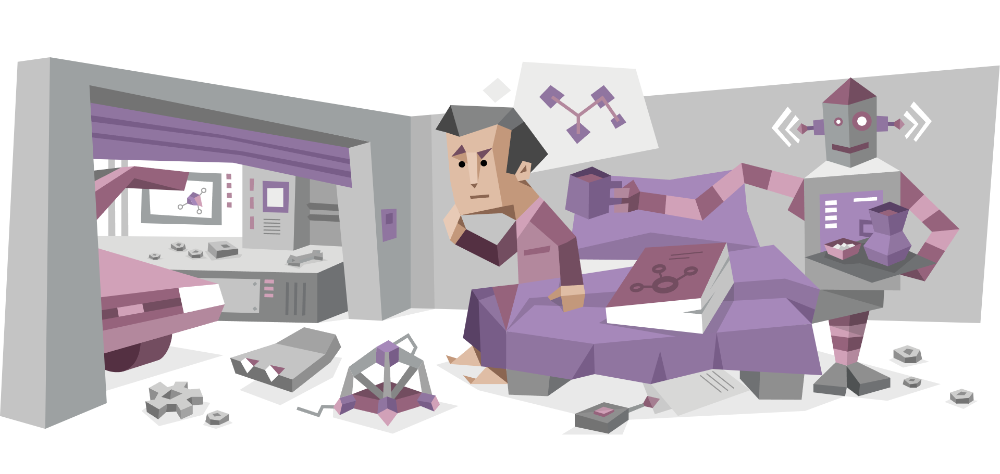

논리로 세상을 해체하고, 창의성으로 재조립하는 개발자

안녕하세요! INTP-A 성향의 자유로운 영혼입니다.
호기심이 가득한 분석가이자 혁신을 추구하는 건축가(Architect) 타입으로,
"왜?"와 "만약에...?"를 반복하며 문제의 본질을 파고드는 것을 즐깁니다.
INTP-A로서의 특징
-
이론과 패턴에 집중: 복잡한 시스템을 분석해 핵심 원리를 추출하는
재능
-
혁신적인 접근: 기존 방식을 과감히 깨고 효율적인 해결책을 제시
-
유연한 사고: 프롬프트 엔지니어링처럼 '다양한 가능성'을 탐구하는
분야에 강점
-
지적 자극 중독: AI, 알고리즘, 게임 메커니즘 등 추상적 개념에 열정
관심분야
-
python: "예전 시작언어였던 JAVA보다 익히기 쉬워서 깊게 해보고
싶은 생각중"
-
프롬프트 엔지니어링: "AI의 사고 체계를 탐구하는 과정이 즐거움"
- 개발: "시스템 설계에 INTP의 분석력 발휘"
취미
- 게임: 게임을 분석해서 단기간에 상위권 실력을 목표로
- 호기심 해결: 궁금한게 생기면 나무위기 찾아보는 편
- 피아노: 하루에 30분정도 스트레스 해소에 도움